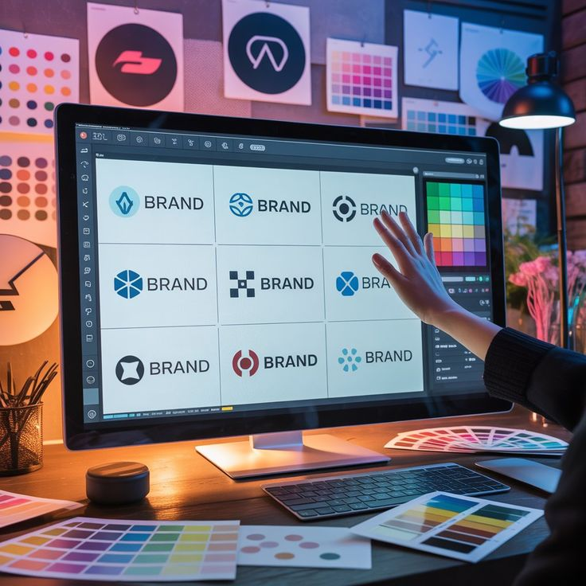
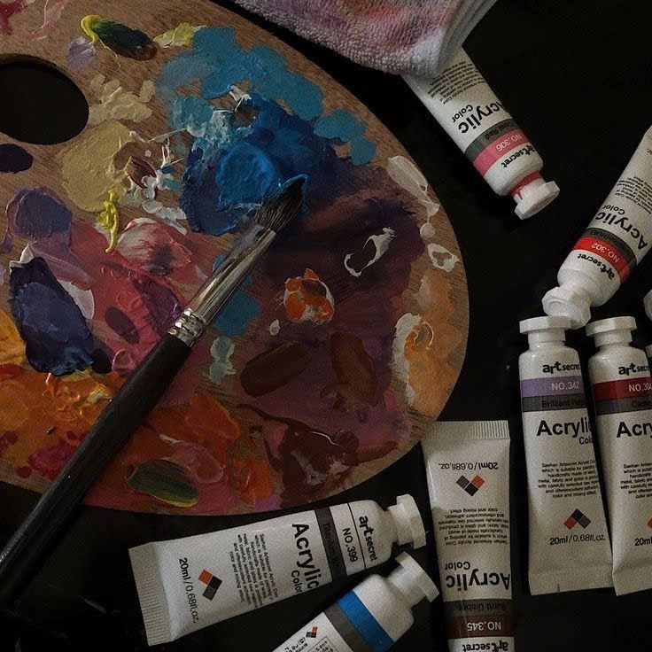
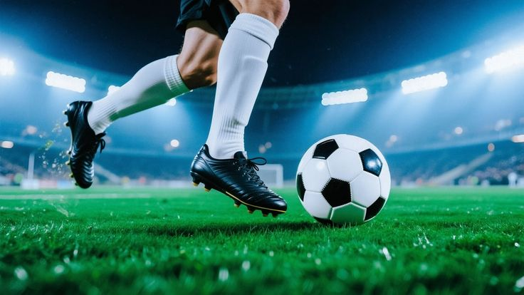
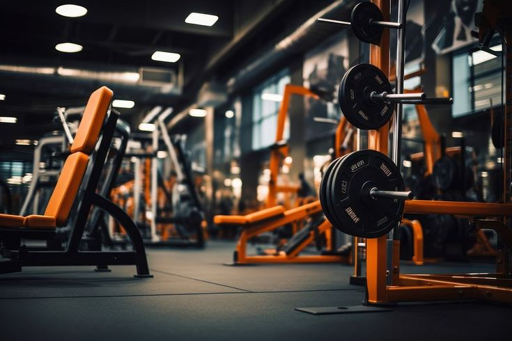

Développement Web
Créer des expériences numériques interactives et innovantes est au cœur de ma démarche. J'aime transformer des idées en applications fonctionnelles et esthétiques.
Ce qui me motive et anime au quotidien
Créer des expériences numériques interactives et innovantes est au cœur de ma démarche. J'aime transformer des idées en applications fonctionnelles et esthétiques.
 🤖✨.jpg)
Fasciné par le potentiel de l'IA à résoudre des problèmes complexes, j'explore constamment les nouvelles technologies et leurs applications concrètes.

Le design est l'art de communiquer visuellement. Je m'épanouis dans la création d'identités visuelles et d'interfaces utilisateur intuitives et harmonieuses.

La mode est une forme d'expression personnelle. J'apprécie suivre les tendances, découvrir de nouveaux styles et comprendre l'impact vestimentaire sur l'identité.

L'art sous toutes ses formes m'inspire et enrichit ma créativité. Des galeries aux expositions, j'aime m'imprégner de l'expression artistique des autres créateurs.

Passionné par le football, je suis les compétitions internationales et locales. Ce sport m'apprend l'esprit d'équipe, la stratégie et la persévérance.
La lecture de la Bible nourrit ma foi et guide mes valeurs. C'est une source de sagesse, de réconfort et d'inspiration dans mon parcours personnel.
Les livres ouvrent des horizons infinis. Je dévore romans, essais et ouvrages techniques pour enrichir mes connaissances et développer mon esprit critique.

Le sport est essentiel à mon équilibre. Au-delà du football, je pratique diverses activités physiques pour rester en forme et dépasser mes limites.